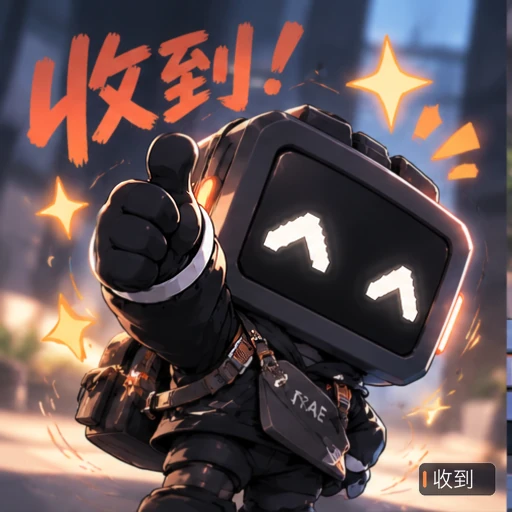
01 收到六张成片
默认加载 WebP（全彩、渐变最完整）。切到 GIF 可对照调色板版本的实际观感。


02
思考


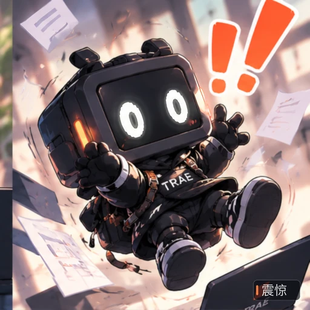
03 震惊


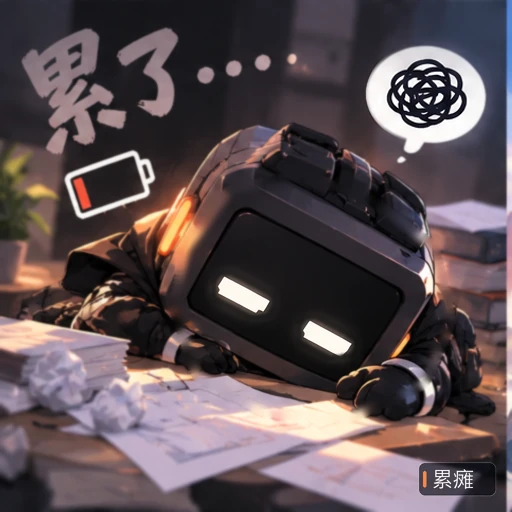
04 累瘫


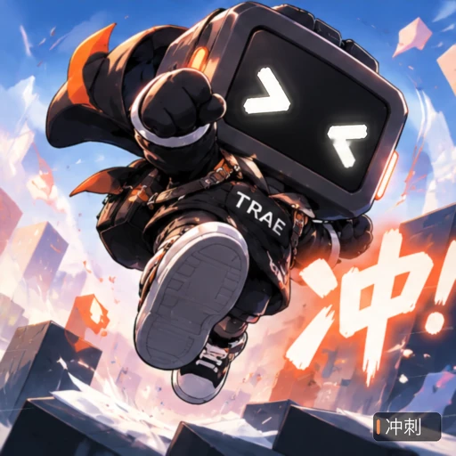
05 冲刺


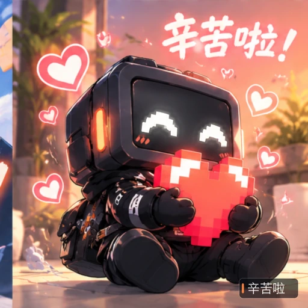
06 辛苦啦


新旧对照
上排是既有的 ChatGPT 生成原画（仅作为视觉基准，未改动）；下排是本次重建后的动作峰值帧。 原画的纹理、阴影、服装、构图全部保留，变化集中在动作与特效上。
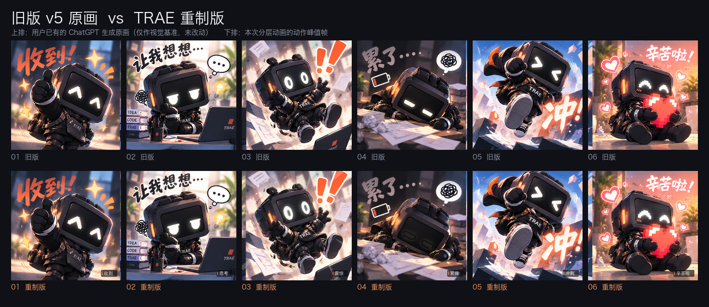
实测规格与质检
数据由 scripts/verify_outputs.py 解码每张 GIF 后统计，不是手工填写的估计值。
“帧变化占比”指相邻帧中差异超过 4 级的像素比例，用来判断是否真的在动。
| 表情 | 尺寸 | 帧数 | 时长 | GIF 体积 | 帧变化（最小/平均） | 首尾差异 | 结论 |
|---|---|---|---|---|---|---|---|
| 01 收到 | 512×512 | 24 | 1200 ms | 1.34 MiB | 1.13% / 9.9% | 0.11 | 通过 |
| 02 思考 | 512×512 | 30 | 1500 ms | 2.04 MiB | 0.59% / 10.7% | 1.92 | 通过 |
| 03 震惊 | 512×512 | 24 | 960 ms | 2.51 MiB | 0.96% / 24.0% | 0.08 | 通过 |
| 04 累瘫 | 512×512 | 32 | 1920 ms | 2.17 MiB | 3.57% / 10.9% | 0.49 | 通过 |
| 05 冲刺 | 512×512 | 20 | 800 ms | 2.83 MiB | 24.42% / 37.5% | 5.08 | 通过 |
| 06 辛苦啦 | 512×512 | 30 | 1500 ms | 1.28 MiB | 2.41% / 8.4% | 0.17 | 通过 |
动作分镜
每张从成片里抽 6 个时间点，用来看动作是否连贯（图片来自最终 GIF 解码帧）。
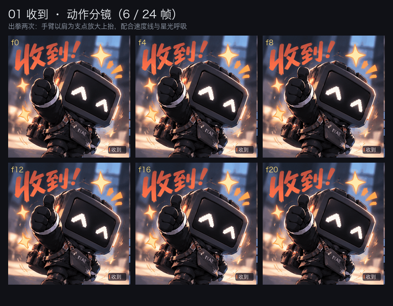
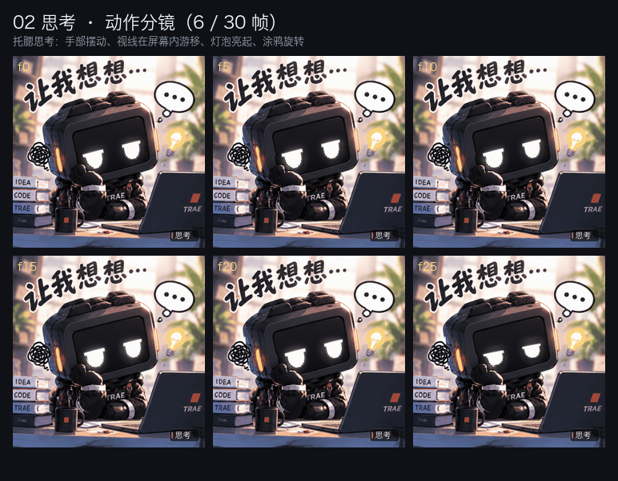
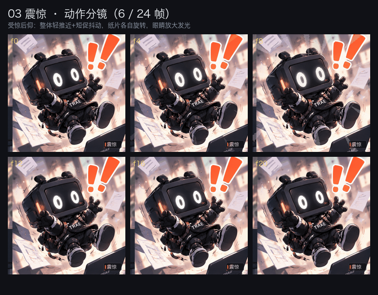
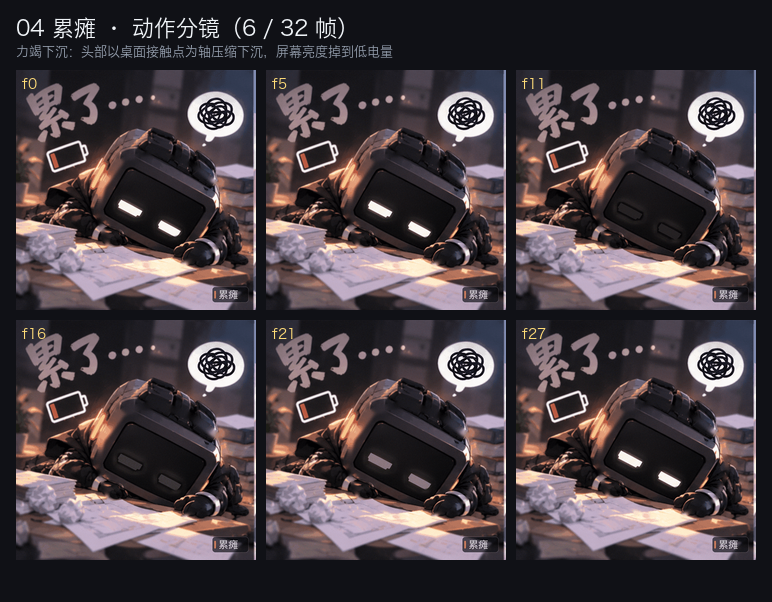
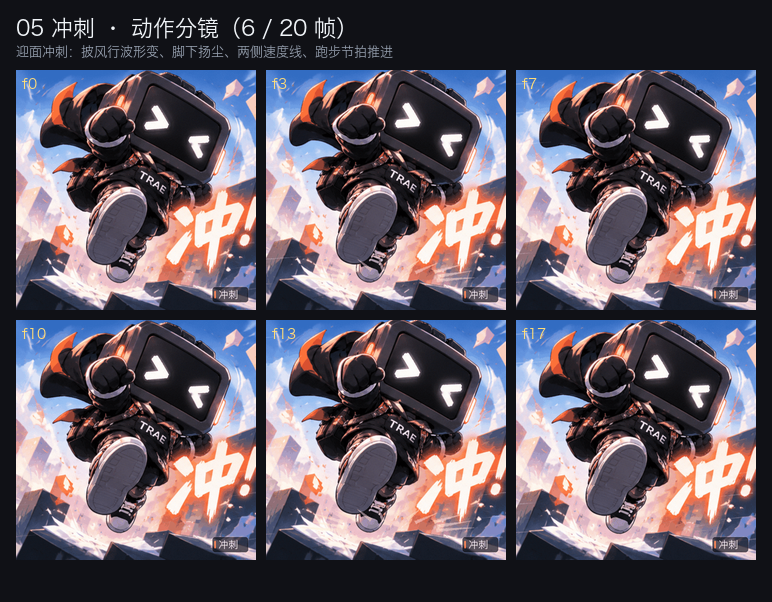
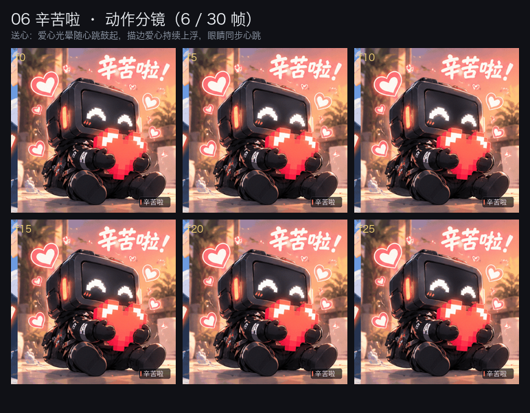
分层与遮罩核对
构建脚本 --debug 输出：把参与运动的图层直接涂在原画上，逐张核对范围是否贴合。
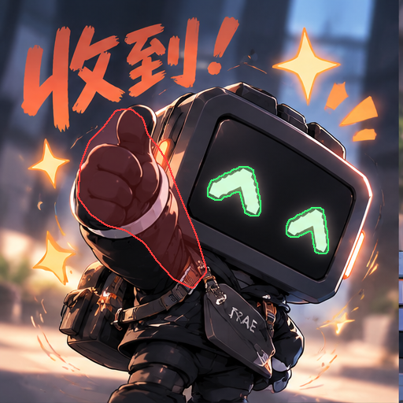
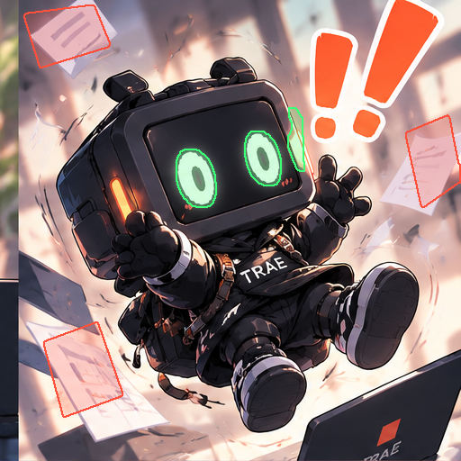
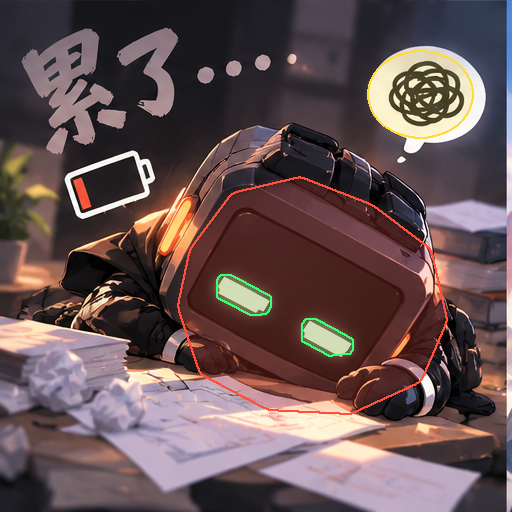
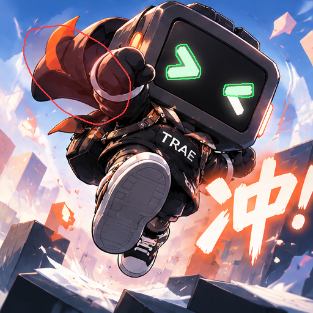
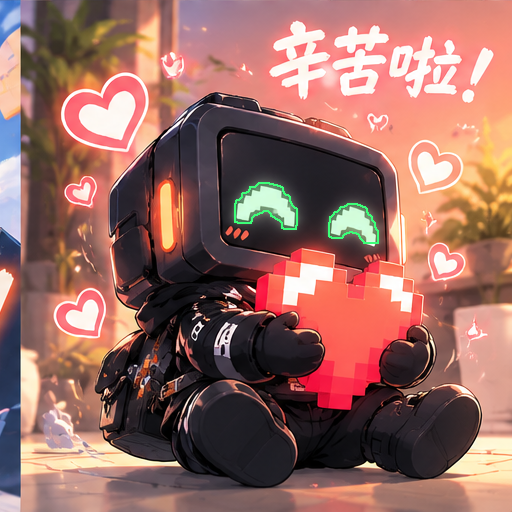
做法与边界
实际采用的技术
- 屏幕眼睛按亮度阈值 + 连通域提取，单独做缩放/位移/变暗/发光。
- 拳、手、纸片、披风、爱心按多边形或颜色提取，再用仿射变换驱动。
- 披风使用逐像素位移场，位移在边界衰减为 0，边缘不会开裂。
- 24–32 帧的关键帧曲线 + smoothstep 缓动编排节奏，所有时间函数在首尾周期闭合。
- GIF 统一调色板 + 固定蓝噪声抖动（噪声不随时间变化，所以不会闪烁）。
没有做的事
这不是骨骼动画，也没有重绘角色本体。角色是单张原画，抬臂本质是 “围绕支点的局部放大/旋转”，不是关节链驱动；因此大幅度的换姿势（比如整条手臂从桌面抬到头顶） 无法在不破坏原画质感的前提下完成。
若要继续升级，可行的下一步是：对角色做分层重绘（头/胸/左右臂/腿）并绑定 2D 骨骼， 或用图生视频生成连续动作后逐帧合成。
来源说明
既有素材（非本次生成）：../TRAE宝表情包v5/*_原画.png 六张 512×512 原画，
由用户此前用 ChatGPT 生成并保存，本次仅读取，未修改原文件。
本次新增：分层、遮罩、动画编排、特效、调色、导出、预览与质检，全部由
scripts/ 下的脚本生成。
旧版 v5 的 GIF 是整图旋转+浮动；本页所有 GIF 均为本次重新渲染，不是旧文件改名或转码。
活动与投稿状态
活动原文要求：使用 TRAE 完成主要创作、至少六张，并在「案例与作品」单独发帖、加 “TRAE宝表情包小赛” 标签。
当前状态：只完成重制与证据留存，没有代发帖。投稿与否、是否满足参赛资格由你自行判断与操作。
本页与 制作记录.md 可作为过程证据，但活动方是否认可仍以其审核为准。